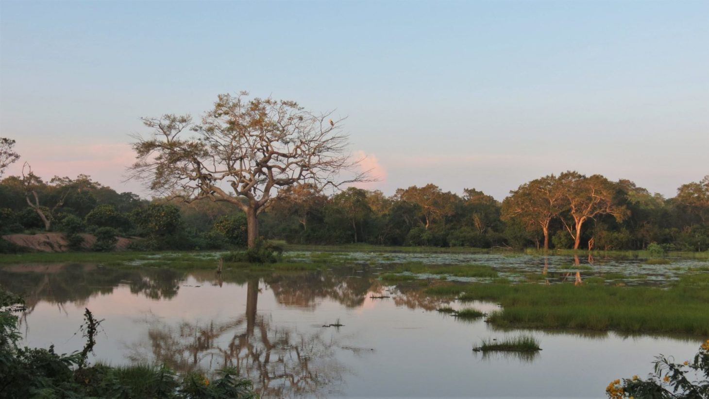
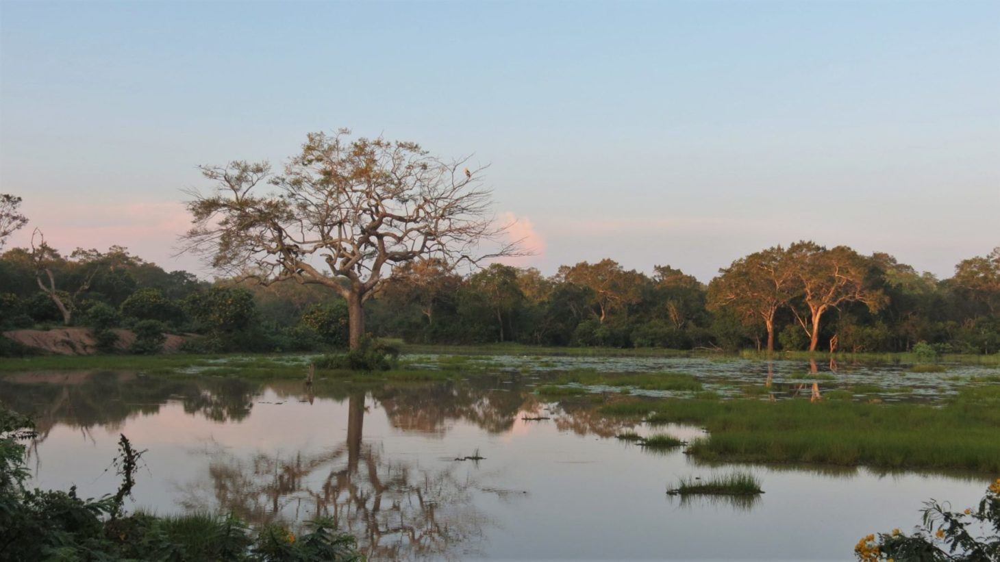

Wonder of Srilankan Wildlife
Sri Lanka's wildlife is as varied as the island itself, ranging from elephants and leopards to marine life and a vast number of different birds, and Sri Lanka is now one of the best places in the world to see whales, including the mighty blue whale.


 
